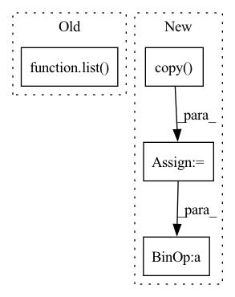

Pattern ID :4822
Before Change
def split_considering_timestamp(df_list, threshold_time_stamp):
df_train = list()
df_val = list()
for df in df_list:
if df["ds"].max() < threshold_time_stamp:
df_train.append(df.reset_index(drop=True))After Change
elif df_dict[key]["ds"].min() > threshold_time_stamp:
df_val[key] = df_dict[key].copy(deep=True).reset_index(drop=True)
else:
df = df_dict[key].copy(deep=True)
n_train = len(df[df["ds"] < threshold_time_stamp])
split_idx_train = n_train + n_lags + n_forecasts - 1
split_idx_val = split_idx_train - n_lags if inputs_overbleed else split_idx_train
df_train[key] = df.copy(deep=True).iloc[:split_idx_train].reset_index(drop=True)
df_val[key] = df.copy(deep=True).iloc[split_idx_val:].reset_index(drop=True)In pattern: SUPERPATTERN
Frequency: 3
Non-data size: 4
Instances Fragment ID: 17031619
Project Name: ourownstory/neural_prophet
Commit Name: 6619741f934957dff2a7fa4ff66620772d41471f
Time: 2022-02-14
Author: ourownstory@users.noreply.github.com
File Name: neuralprophet/df_utils.py
M Class Name: AnonimousClass
N Class Name: AnonimousClass
M Method Name: split_considering_timestamp(5)
N Method Name: split_considering_timestamp(2)
M Parent Class:
N Parent Class:
M File Name: neuralprophet/df_utils.py
N File Name: neuralprophet/df_utils.py
M Start Line: 500
M End Line: 510
N Start Line: 526
N End Line: 552
Before Change
sns.violinplot(data=data, **kwargs)
else:
axis = sns.boxplot(data=data, **kwargs)
axis.set_xticklabels(list( data.columns) , fontdict={"rotation": 70})
if show_datapoints:
sns.swarmplot(data=data)After Change
freq=None,
**kwargs):
data = data.copy()
data = consider_st_en(data, st, en)
// if data contains duplicated columns, transformation will not work
data = data.loc[:, ~data.columns.duplicated() ]
if normalize:
transformer = Transformations(data=data)
data = transformer.transform() Fragment ID: 17031579
Project Name: atrcheema/dl4seq
Commit Name: 78cf798bc91c64e287cc89e892a81fc356d154c0
Time: 2021-09-14
Author: ather_abbas786@yahoo.com
File Name: ai4water/eda/_eda.py
M Class Name: EDA
N Class Name: EDA
M Method Name: _box_plot_df(11)
N Method Name: _box_plot_df(8)
M Parent Class: Plot
N Parent Class: Plot
M File Name: ai4water/eda/_eda.py
N File Name: ai4water/eda/_eda.py
M Start Line: 1014
M End Line: 1030
N Start Line: 1081
N End Line: 1112
Before Change
observations = convert_to_torch(observations, device=self._device, cast=None, in_place=False)
sub_step_keys = list( observations.keys())
// predict values for first state
key_0 = sub_step_keys[0]
values = {key_0: self.networks[key_0](observations[key_0])["value"][..., 0]}After Change
for substep_record in record.substep_records[1:]:
// compute value 2 as delta of value 1
prev_values = detached_values[-1]
obs = substep_record.observation.copy()
obs["prev_value"] = prev_values.unsqueeze(-1)
value_delta = self.networks[substep_record.substep_key](obs)["value"][..., 0]
next_values = detached_values[-1] + value_delta
values.append(next_values)
detached_values.append(next_values.detach()) Fragment ID: 17031629
Project Name: enlite-ai/maze
Commit Name: 2b585e55aa7306a15bd6fd81304ea63ef8d9a9ff
Time: 2021-04-29
Author: office@enlite.ai
File Name: maze/core/agent/torch_state_critic.py
M Class Name: TorchDeltaStateCritic
N Class Name: TorchDeltaStateCritic
M Method Name: predict_values(2)
N Method Name: predict_values(2)
M Parent Class: TorchStateCritic
N Parent Class: TorchStateCritic
M File Name: maze/core/agent/torch_state_critic.py
N File Name: maze/core/agent/torch_state_critic.py
M Start Line: 255
M End Line: 276
N Start Line: 255
N End Line: 273